甲弹对抗技术概论（ZS1011版）
来源：甲弹对抗技术概论（ZS1011版).docx

笔者：XINY BEEF 知鱼 雨燕 铿惑 非提·隆美尔
排版：方方西瓜 非提·隆美尔
校对：知鱼 铿惑
部分插图/模块提供者：XINY YANGZTE BEEF 566_A1 DIN牌王建武 北风白草 元宇宙方块 明石 蚊子一号 知鱼 铿惑 非提·隆美尔 弗拉基米尔·加利昂诺夫
封面设计：雨燕
参考文献：《凋零蓝头炮技术导论》（舟舟）（按照名字笔画排序）
警告：本文严禁以任何形式复制、抄袭；可自由传播的范围仅限：FCP（“钫钫局”技术交流平台）SCO（航械技术交流研发联合体）内/外群、其余附属于SCO组织的群聊
侵权举报/纠错： 知鱼 QQ：2604773618
目录：
0.1绪论
第一章：纯机械类甲弹对抗技术
1.1损管技术
1.1.1防爆水管顶盖技术
1.1.2内置甲技术
1.1.3外置高频技术
1.1.4反风弹格栅底甲技术
1.2电磁炮技术
1.2.1经典电磁炮技术简介
1.2.2.1重甲电磁炮技术
1.2.2.2侧面重甲电磁炮技术
1.2.3可阻断式外膛技术（暂用名）
1.3超重型水管技术
1.3.1水管发展史简介
1.3.2 XINY架构、XINY架构配套面甲技术
1.3.3 末地烛引流技术
1.3.4中频内膛与岩浆外膛技术
1.3.5矢量内膛技术
1.3.5.1雨燕矢量内膛架构
1.3.5.2知鱼矢量内膛架构
1.3.5.3目视矢量内膛架构以及目视炮简介（本节作者：XINY）
1.3.6察刷
1.3.6.1米莎架构
1.3.6.2吞信号架构
1.3.7超重型内膛技术简介
第二章：低速蓝头武器
2.1蓝头舰载机技术
2.1.1一次性发射式蓝头舰载机技术
2.1.2冲刷式蓝头舰载机技术
2.2蓝头弹匣炮技术
2.2.1直射式蓝头弹匣炮技术
2.2.2水流预偏转式蓝头弹匣炮技术
2.2.3蓝头弹匣武器制造要点及其优缺点
2.2.4弹射式低速蓝头弹匣速射炮(本节作者：铿惑)（有删改）
第三章：低速风弹、恶魂武器
3.1风弹机枪技术
3.1.1风弹提取技术
3.1.2常规风弹机枪技术
3.1.3双头风弹机枪技术
3.1.4下发风弹机枪技术
3.1.5下射风弹机枪技术
3.1.7风弹雷达技术简介
3.1.7.1水流偏转法
3.1.7.2铿惑雷达架构（本节作者：铿惑）（有删改）
3.1.7.3双风弹雷达（本节作者：XINY）（有修改）
3.1.7.4 XINY雷达架构（本节作者：XINY）
3.2恶魂机枪技术
3.2弹射式恶魂火球机枪
第四章：高速武器
4.1高速现象
4.2 一次性高速蓝头架构
4.3 566高速蓝头架构
4.4侧发一次性高速蓝头架构（本节作者：铿惑）（有删改）
4.5目视高速蓝头架构
第五章：杂谈
5.1堆堆乐现象
5.2典型的战舰布局赏析
5.2.1英仙座布局
5.2.2.1叶卡布局（本节作者：雨燕MRedstoneM）（有修改）
5.2.2.2 伪叶卡布局
5.2.3 旗帜布局
5.2.3 旗帜506II期布局
5.2.3 旗帜506V期布局
5.3模块压制关系示意图
5.4战舰分代
5.5对若干针对风弹机枪的命名方面的争议的决议（927协议）
5.6风弹机枪的系统命名法
5.7相关前置知识简介
后记
0.1绪论
甲弹对抗的本质，是永无尽头的矛与盾的较量，它驱动着我们不断进步，在无止境的对抗中推动航械技术走向更远的未来。
随着舟舟等人开发的零动量蓝头、茗、Ones1完善了重甲技术，军用航械的世界发生了翻天覆地的改变。但在这种变化中我们注意到一个现象，提升战舰技术力和战舰实战性能两条路居然产生了巨大的撕裂，这种现象是前所未有的，一般而言技术力越高战舰越强劲，但现在变成了谁机械性堆砌的越多就越强大。正如麋鹿为了适应环境进化出越来越大的角，这种现象的确是目前环境、规则体系下催生出的必然的演化规律，无人可否认的是，堆堆乐是最适应现行环境的选择。
但这种现象同时抑制了玩家进一步学习航械的积极性，对航械科技发展构成了严重威胁。知鱼以及其它笔者故编著此书以引导所有后起之秀们走上一条更高质量的发展道路，打破堆堆乐怪圈。
第一章
1.1损管技术
战舰损害管制是指战舰为应对战斗损伤所采取的一系列的预防、响应、抑制、恢复措施，旨在最大限度保持舰艇的生存性、稳定性和作战能力。其核心目标是控制损害扩散、恢复关键功能，确保舰艇在受损后仍能继续战斗。
1.1.1防蓝头水管顶盖技术
目前分膛水管普遍使用合金作为顶盖，但蓝头可以击破合金导致炸膛。故知鱼开发出了用含水方块构成的顶盖以应对其威胁的技术。
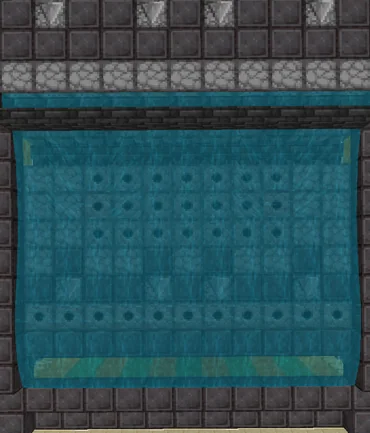
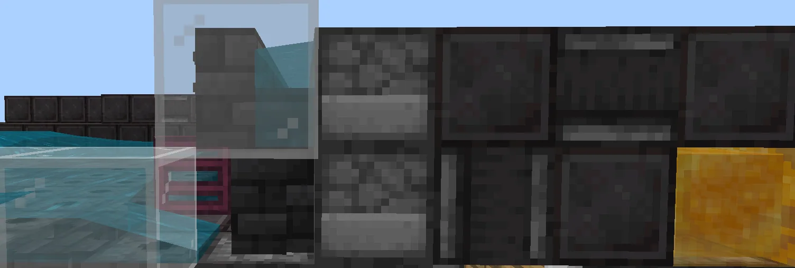
↑图1.1.1/1旗帜-506工程VB型搭载的防爆顶盖
由于高频炮内膛一直在爆炸，爆炸冲击波会弹飞蓝头，故使用该技术意义不大。但对于中频/一体膛而言，非常有必要安装这种顶盖
但需要注意的是，防蓝头顶盖一定需要经过严密的测试以证明其不会导致防御力降低。比如图1.1.1/1的顶内膛看似可以被TNT炸掉，但事实上上面的发射器被破坏后水流会立刻覆盖内膛导致其无法被摧毁。
1.1.2内置甲技术
内置甲是指为了抵挡模块殉爆带来的TNT射线而在战舰内部加装的装甲。↓图1.1.2/1盾牌座MAX
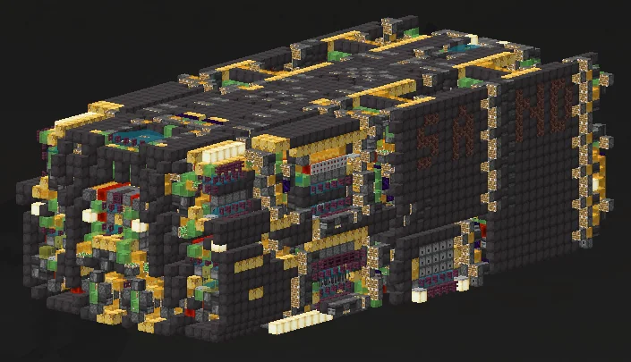
我们来看看盾牌座MAX正面的高射电磁炮，其后面的合金把其与2台不太重要的舰载机包单独包裹了起来。↓图1.1.2/2盾牌座MAX电磁炮后面空间的照片（部分方块被移除）
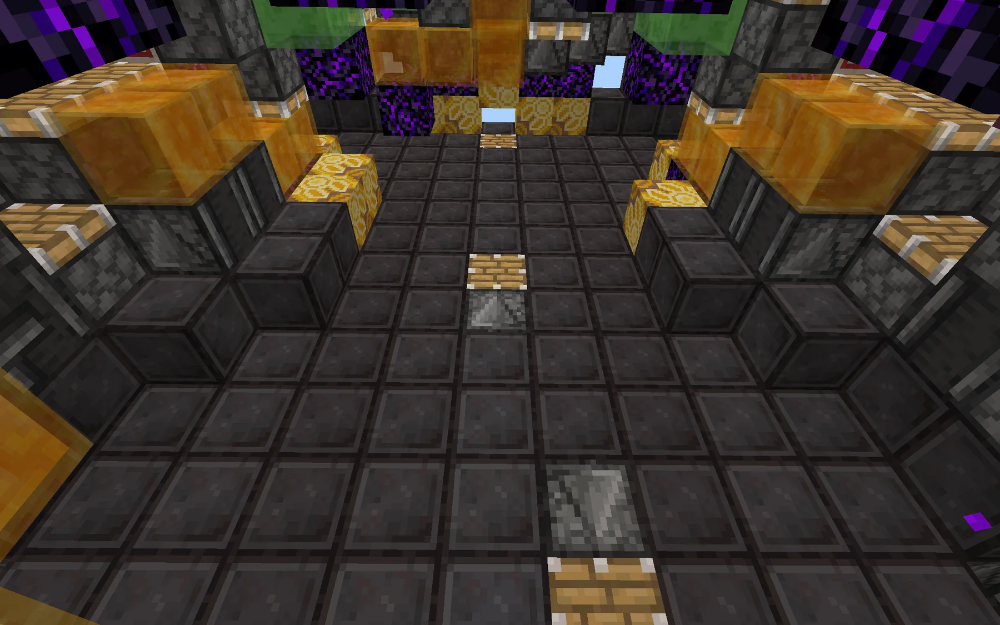
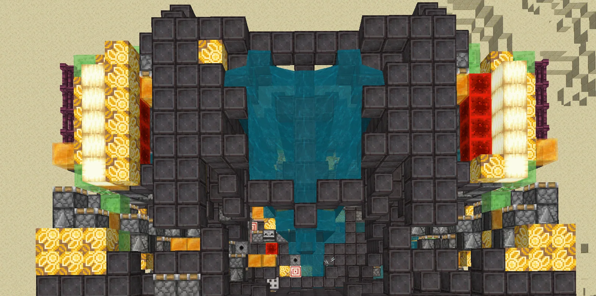
↑图1.1.2/2
如图1.1.2/2，我们进行殉爆测试时会发现剧烈的殉爆虽然波及了部分周边模块，但是在合金后的驾驶室毫发无损。这充分地证明了搭载内置甲的重要性，尤其是在搭载电磁炮时，请一定要配内置甲！
电磁炮的内置甲一定要完全包裹住所有角落。因为电磁炮殉爆会产生无孔不入的空爆TNT，不包好甚至有可能适得其反。
↓图1.1.2/3旗帜25型的殉爆测试结果
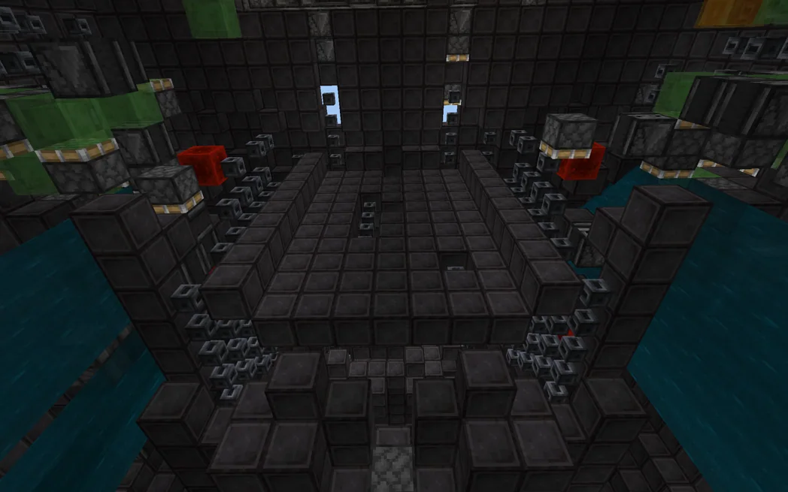
图1.1.2/3的旗帜25型就是一个典型的反面教材，留了缝隙的内置甲变相加大了殉爆威力。如果您战舰的空间有限，无法安装内置甲，我想1.1.3的技术会是您的救命稻草。但如果迫不得已，可以不建造电磁炮的底甲或是侧面装甲，这样可以尽可能地使TNT向外部空间扩散。
1.1.3外置高频技术
当电磁炮前面的部分结构被破坏并殉爆时，如果高频电磁的激活装置还在工作则会源源不断地产生TNT导致殉爆损害大幅上升（事实上大部分殉爆的TNT来自于此）。但如果把高频装置放置在模块正前方。TNT命中电磁炮会优先损坏高频装置，那么殉爆威力几乎会下降到零。↓图1.1.3/1英仙座MAX的电磁炮的正面

1.1.4反风弹格栅底甲技术
冲刷式蓝头舰载机以及下发式蓝头舰载机（参见2.1）的致命弱点是挡不住下发/下射风弹机枪（参见3.1）。为此566发明了反风弹格栅底甲技术。其制造需要用到以下的特性
↓图1.1.4/1 BUG铁活版门的制造方式（操作顺序：左→右）
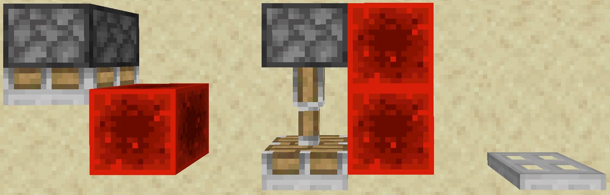
根据1.1.4/1所示操作可以得到一个保持打开的铁活版门，我们把这种活版门安装在底部既可以不影响蓝头的发射还可以挡住一部分风弹。
1.2电磁炮技术
在航械圈内电磁炮是指具有空爆能力的火炮，别称空爆炮（空爆炮其实才是其最严谨的称谓，但航械圈内说的电磁炮一般指的都是这种炮）。其空爆特征可以拦截低速蓝头、风弹、恶魂火球、烈焰弹等实体以及导弹。
1.2.1经典电磁炮技术简介
典型的电磁炮有一个上下并置的内、外膛，这种结构会使TNT在弹开前有足够的延时以至于可以在战舰前比较集中性地爆炸。
1.2.2.1重甲电磁炮技术
为应对TNT的威胁Searxy为电磁炮正面加装了合金装甲并巧妙地避免用脆弱的栅栏门拦住水流（不过美中不足的是外膛还是用的栅栏门拦水）。
↓图1.2.2.1/1达尔文兽III电磁炮和其内膛细节
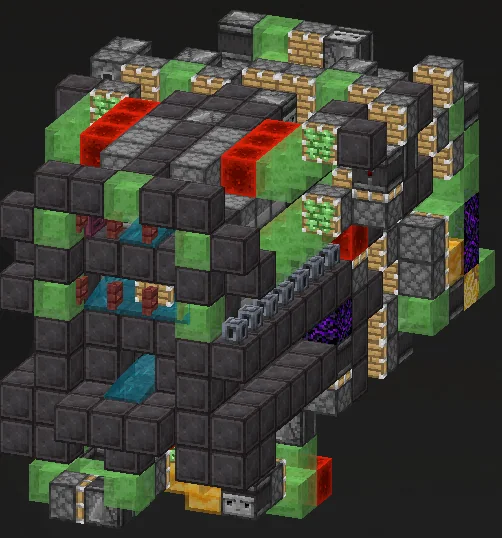
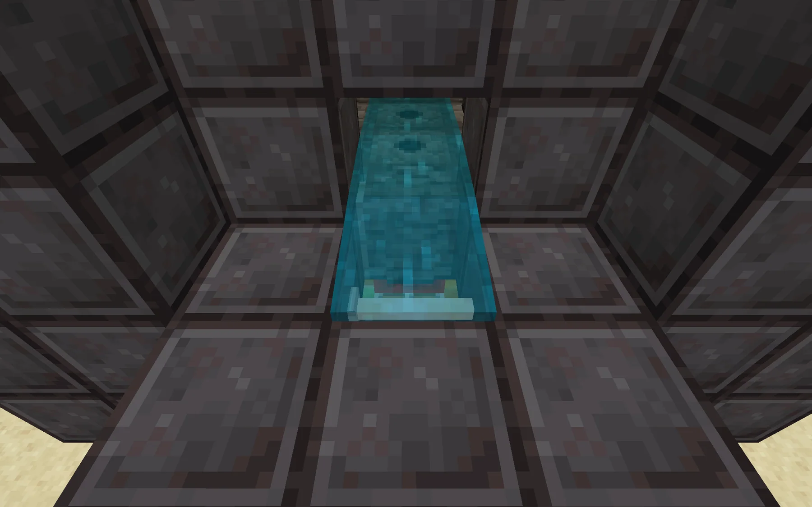
（这个内膛的处理也运用了末地烛引流技术，参见1.3）
更高性价比的方式是用水流覆盖电磁炮的裸露部分。这种电磁炮自然而然叫做水甲电磁炮（附属于重甲电磁炮），例如Ones1 Ultra的正面电磁炮就是最典型的水甲电磁炮。
知鱼认为，重甲电磁炮应该具有抵御高密度TNT打击并在被打击后无需修复即可开火的能力。但部分电磁炮不能完全防御住全部TNT，其也被习惯叫做重甲电磁炮。
1.2.2.2侧面重甲电磁炮技术
正面重甲电磁炮为了防御牺牲的单个外膛的发射器数量，故为了保证有效拦截蓝头的能力，需要双层外膛，故体积飙升。其会严重挤占其它正面武器的空间，使用侧面的重甲电磁炮可以规避这个问题。
↓图1.2.2.2/1叶卡捷琳娜-25-1及其中间的电磁炮
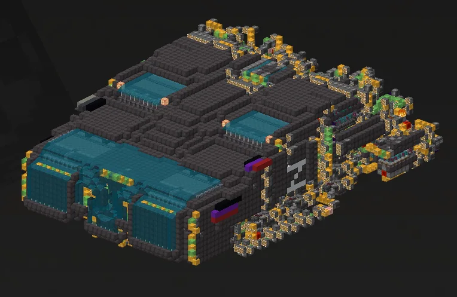
↓图1.2.2.2/2 搭载铁幕III的旗帜-506工程BP型

铁幕III采用了单层外膛设计，这种设计比双层更难殉爆，同时用末地烛防爆内膛技术，这种技术和1.1.1的防爆顶盖有异曲同工之妙。
其次，因为其被嵌入侧面装甲，原有射界一般很小。故内膛推力一定要够大以实现沿轴效果以保证射界，铁幕III就采用了吞信号察刷技术（参见1.3）。以实现此效果。

↑图1.2.2.2/2 铁幕III的内膛架构
因为用了末地烛防爆内膛技术，可以不设计内膛易水器，但一定要处理好这个装置的易水架构使其可以挡住TNT以保护内膛的发射器部分。
1.2.3可阻断式外膛技术（暂用名）
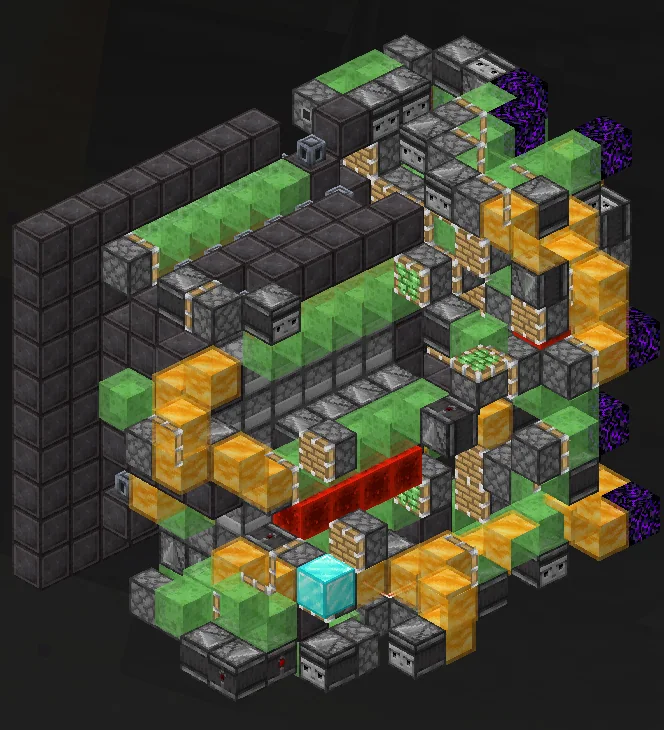
随着甲弹对抗烈度的上升，一个需求被提出——内膛可以单独被启动，产生爆炸以弹开落在其上面的敌方的TNT。实现这个需求最浅显的思路是内、外膛独立制作2组T触发装置。但这样体积太大，于是一个更精简的思路出现了——阻断信号向外膛传播，要开火时不阻断而内膛保持常开。
↑图1.2.3/1
钻石块旁边的黏性活塞被激活会阻断信号向上传播。而正常情况下则可以向上传递信号。这种设计可以压缩体积。
1.3超重型水管技术
超重型水管的概念具有相对性。比如以前3宽水管就算是大水管，但现在这东西是小水管。我们规定，在目前的环境下，火力大于等于XINY架构11宽的水管炮叫做超重型水管。
1.3.1水管发展史简介
现在我们先对老的水管技术进行简单回顾，详细内容参见SCO编写的航械教材，那里有更详尽的讨论。我们把在XINY发明的“冠冕”水管之前的水管模糊地称为老水管，之前的时代统称“老水管时代”。自从JAT在2016年发明了水管过后，水管就开始不停迭代。
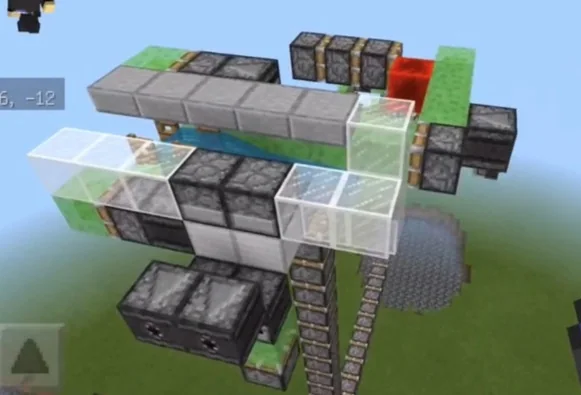
↑图1.3.1/1现在水管结构的雏形，by:JAT
图示模块可以认为是第一款真正意义上的水管。
“老水管时代“的技术最终止步在两侧自动易水以及类似星陨的整个水管的单片激活装置粘在一条粘液块上的设计，仅用一条的缺点很明显，就算发射器部分的推力有冗余，因为激活线路不够大无法激活全部发射器而无法再往上发展了。
1.3.2 XINY架构、XINY架构配套面甲技

分膛水管诞生后，基于单条粘液块无法承载更大的发射器装置的问题，XINY创造性地分开使用了2条来激活内、外膛。相应的，易水也转移到前方，因为两侧式的覆盖不了全部膛体。↓图1.3.2/1 一款与XINY冠冕结构类似的火炮（BY:JAT）
该架构大幅提升了水管火力的上限，甚至可以说颠覆了“大水管”的定义。而我一般称呼采用XINY激活线布局的水管为长款水管，采用类似星陨激活线布局的水管为短款水管。
很快采用这种布局的水管爆发式地涌现。
↓图1.3.2/2 XINY激活线（上）星陨激活线（下）
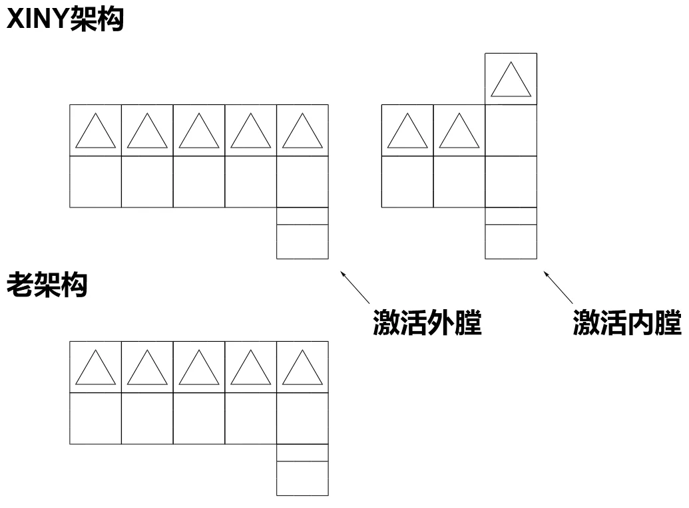
但正如图1.3.2/2，因为用了两条黏液块/蜂蜜块，我们需要再加组装置激活外面地粘性活塞，XINY和JAT为了追求极致的压缩，选择外置了这个激活装置。但是随着甲弹对抗的烈度上升，给水管安装正面装甲显得尤为重要。但其裸露在外的激活线路阻碍了安装面甲。最终，我们选择把激活装置下置，这样长款11宽也可以完美地兼容面甲了（如图1.3.2/3的水管9AR51）。
↓图1.3.2/3 9AR51大水管以及其配套面甲
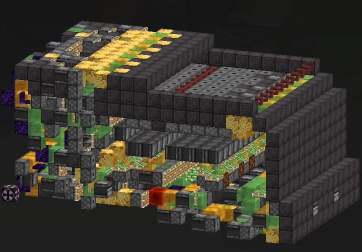
1.3.3 末地烛引流技术
仅有面甲还不够完美，脆弱的木头栅栏还是扛不住TNT，但XINY提出的末地烛引流法（如图2-6-1）取缔了传统的拦水装置。当然也有直接把面甲做成水甲一步到位的方案（如图2-6-2）。图1.3.3/1↓RO178(Beef加装末地烛引流，并且把激活装置优化为适配面甲的结构（改自JAT水管）

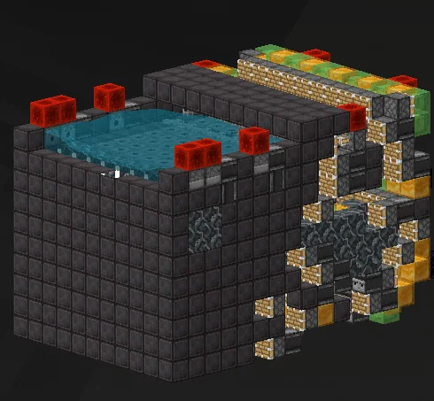
↑图1.3.3/2 Diffuse II (BY：yangzte)
1.3.4中频内膛与岩浆外膛技术
不久XINY再次做出突破性贡献，岩浆外膛炮以极高的TNT利用率和很少的外膛获得了与传统长款大水管掰手腕的能力。XINY利用了中频内膛（爆炸频率也会小一些）配合岩浆（可以阻滞TNT流动）使得TNT更均匀地分布在膛内，增加了TNT的密度，故用相当小的外膛就可以爆发出巨大的威力。不过，该设计最大的问题是难以上重甲，不适合目前的高烈度对抗。（XINY用炛号在3V3比赛中靠这个威力巨大的水管（该模块的分类存在争议，这里简单地认为是它一种水管衍生物），成功拿下6杀的傲人战绩）

↑图1.3.4/1“炛”号（“炛”，同“光”）
显然，中频内膛移植给普通大水管也有类似效果，只不过远不如搭配岩浆外膛好，镇魂曲是第一款实装高频外膛中频内膛（简称错频，非官方术语）的水管。
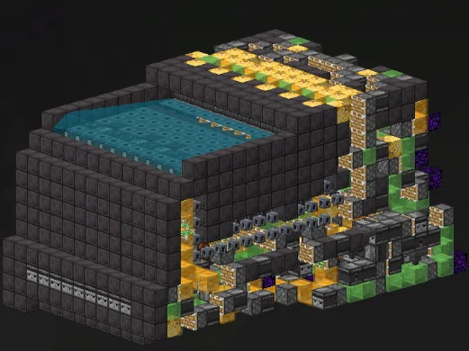
↓图1.3.4/2 镇魂曲
1.3.5矢量内膛技术
矢量内膛技术是指通过一定方法使内膛推力不均匀化分配，使TNT弹道具有更强的方向性。其优势在于可以提升TNT的利用效率。（注：严格意义上，应该叫伪矢量内膛）
1.3.5.1雨燕矢量内膛架构
雨燕实现了矢量内膛架构的移动化（矢量内膛本身早在很多很古老的固定炮上得到使用），其意义和中频内膛差不多，都在一定程度上提高了打击
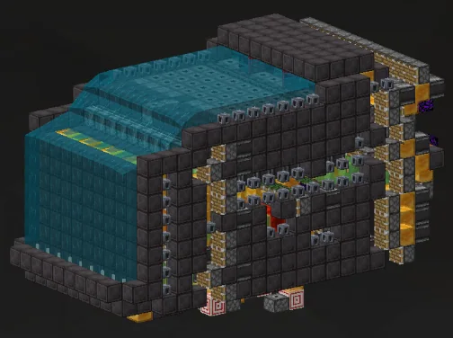
效率，如图1.3.5.1/1的89式分膛水管。
这个架构简而言之是靠3组T触发装置激活3组内膛来实现矢量化。其示意图如图1.3.5.1/2（T触发结构未展示）所示。↓图1.3.5.1/2
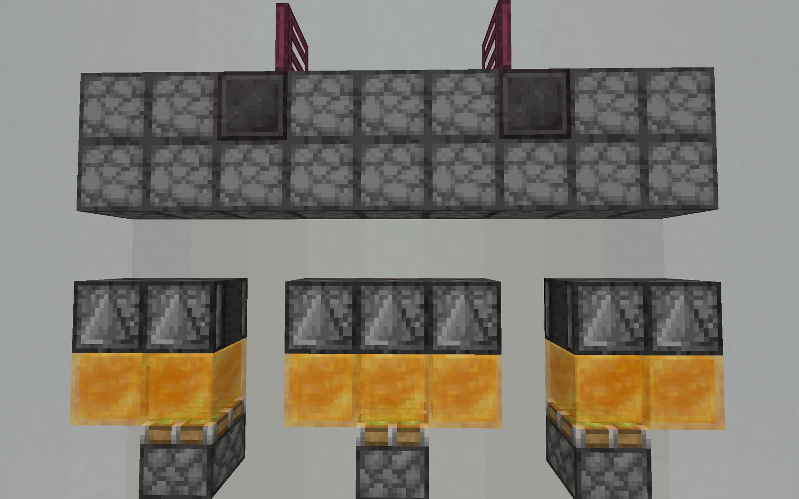
但如果你稍加测试便会发现，简单粗暴地用3组T触发操控3个内膛，稳定性会非常差，原因有二，第一，激手动打开3个内膛必定导致激活时间不一致，这导致爆炸时间不一致，导致真正推出TNT的是某一个内膛而不是矢量内膛整体（在中频内膛中这个问题非常明显，高频内膛中还勉强不会直接导致炸膛）；第二，角度过大，导致膛体外沿有部分TNT打不出去或是只能飞出去一小段，落在地上炸到自己亦或流回后导致炸膛。
雨燕架构矢量内膛架构解决了这个问题。这个方案其巧妙之处在于中间那一组内膛可以激活中间的内膛两侧内膛分割处底部的那一组发射器，并且因为活板门碰撞箱处于离对称轴近的位置，它们会进入两侧的内膛，使得3个膛的推力差距不至于那么巨大，这在一定程度上限制了矢量性，但是起码能稳定工作了。
但雨燕架构的劣势也很明显，3组T触发使其体积变的及其夸张。这个缺点是中小型战舰绝对无法接受的。
1.3.5.2知鱼矢量内膛架构
为解决雨燕架构体系过大的问题，知鱼提出了线锯式矢量内膛激活装置，如图1.3.5.2/1。
↓图1.3.5.2/1线锯式矢量内膛激活装置（这个装置还融合了中频内膛）
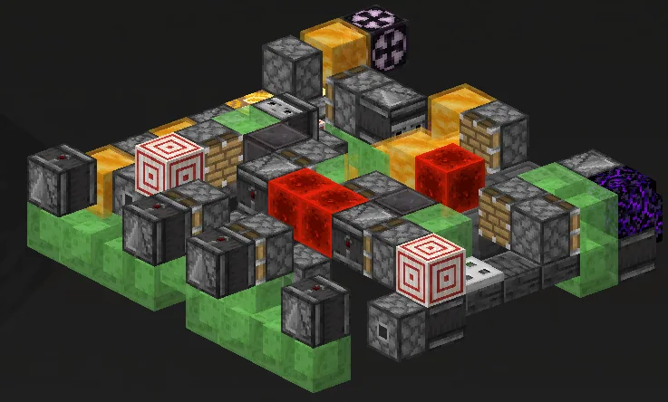
这个结构的原理也很好理解，其优点在于可以大幅度压缩体积。
1.3.5.3目视矢量内膛架构以及目视炮简介（本节作者：XINY）
目视炮：不同于以往的一体膛或者分膛，是可以通过目视进行完全精确打击的TNT火炮，下图是其原理的示意图
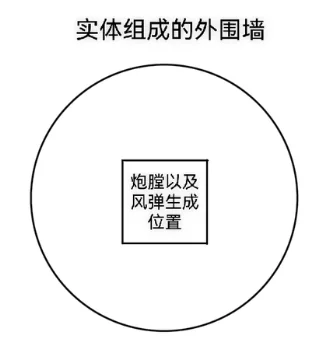
←图1.3.5.3/1
首先，玩家看向具体某方向，炮膛以及风弹生成位置生成一枚风弹，然后将风弹用三叉戟或箭矢击飞，撞击实体墙，在风弹撞击实体墙的过程中，在炮膛以及风弹生成位置生成多个同时序的TNT，随后风弹撞击实体墙爆炸，推动方才生成的TNT向玩家目视的反方向移动，然后再在炮膛位置生成一枚或多枚TNT作为弹头，最初生成的TNT爆炸，推动弹头TNT向玩家目视方向飞行。
目视内膛始于目视炮，是目视炮与分膛炮内膛的融合。
一般结构：
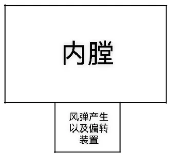
原理：假如玩家向左看，风弹产生及偏转装置发射的风弹击中内膛左侧，内膛TNT右偏，内膛多数TNT在右侧爆炸，使外膛TNT左飞。
1.3.6察刷
1.3.6.1米莎架构
↓图1.3.6.1/1米莎架构
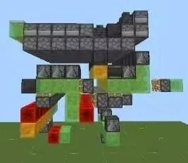
米莎架构察刷的确实现了大幅度提升火力密度，但是问题是复杂的纯机械结构，如果还要集控化那体型就更巨大了，比如底下的SG25。所以应用不广泛，searxy的SG25就是基于这个结构改进的（知鱼提供了建议帮助searxy再次优化，实现了单片6推力）
（事实上，米莎架构是清锋默发明的，只不过米莎使这个架构真正出名）（后来XINY成功压缩了这个架构，所以这种架构也会成为一个实用的技术路线）
↓图1.4.6.1/2 SG25（BY：searxy）
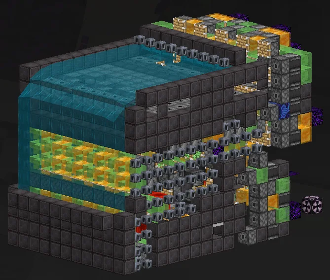
1.3.6.2吞信号架构
但2025年2月2日，一款由头铁der憨憨制作的水管——Lunatic横空出世，给群友们带来了极大的震撼（清锋默在更早之前做出了吞信号水管，但是其关注度有限），观察者明明紧紧贴在发射器上为什么移动不误触呢？这是因为设计者采用了一种历史悠久，但不咋有存在感的设计，我称之为吞信号设计，该设计发明者难以考证，因为很多老船的导弹上面就是采用了这个设计。（原理参见他在B站发布的视频）

↑图1.3.6.2/1 吞信号架构示意图
这种采用独特时序的设计方案极大程度地压缩了察刷架构的高度，但相应的增加了移动线的长度。
1.3.7超重型内膛技术简介
Yangzte是一位已经和我们失去联系的群友，其一直以独特的技术路线为航械发展的多样性带来了举足轻重的影响，也是Yangzte坚定了知鱼继续走属于自己的路的信心。

↑Ripple-II.alpha.28型水管
Ripple-II.alpha.28型水管的内膛设计巧妙地将电磁炮内膛和水管外膛结合，下面是其切面图，相信看了此图就可以理解其设计。
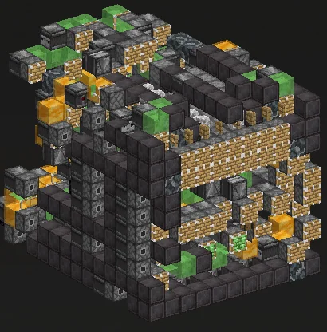
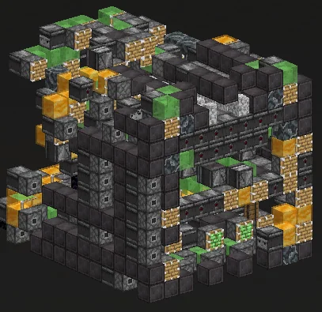
其独到优势在于：仅仅用5格宽的空间使推力达到50推，换而言之，放在现在的11宽上可以实现100推力的恐怖数据。
其劣势也比较明显。其一，结构复杂，时序不好安排，设计移动线难度偏大；其二，目前其难以兼容察刷、矢量内膛等新技术。
（事实上XINY在更早之前就有提出类似的结构，但Ripple-II.alpha.28任然是唯一一个将其应用在水管上的）
第二章
2.1蓝头舰载机技术
蓝头舰载机是指具有完成运输蓝头、发射蓝头任务能力的舰载机。首个真正意义上的蓝头舰载机是白草发明的“瑶光”。但白草当时并未意识到蓝头舰载机的消耗品本质，将瑶光设计为可重复回收的伪三向结构，并且拟将搭载配套装弹机，这样的思路在载弹密度上可能高于现在的舰载机，但是1架瑶光往复运行的过程中耗时巨大，有很长的火力真空期；其还容易被蓝头击中导致瘫痪，故这种路线并不适应残酷的对抗环境。
但是蓝头舰载机对航械发展有极其深远的影响，蓝头这种全新的武器的出现打破了合金无敌的神话，使得航械的甲弹对抗生态更加平衡。下面这张梗图是对其的幽默却深刻的反映：
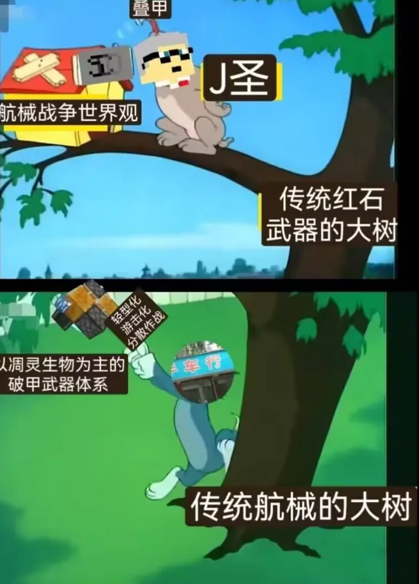
2.1.1一次性发射式蓝头舰载机技术
DMIA/HMIA系列蓝头舰载机是该技术最典型的代表。↓图3-5 HMIA2型 蓝头舰载机

这种舰载机如同德军的“铁拳”系列反坦克火箭筒，打完弹药就抛弃，结构简单，比瑶光更加便捷，这种舰载机很快成为了主流舰载机，并且保持了几乎一整年的舰载机领域的技术优势。
其局限性非常明显，面对新出现的风弹技术破绽极大。
2.1.2冲刷式蓝头舰载机技术
为了应对HMIA2式舰载机的局限性，566发明了靠岩浆冲刷蓝头，给其一个向下的力再在飞行过程中手敲变向。这种结构如果处理得当，配合防风弹格栅可以彻底防住风弹。而且省去了变向结构，可以提升蓝头储存密度。
2.2蓝头弹匣炮技术
和冲刷式蓝头舰载机技术一样，为了反置风弹我开发出了蓝头弹匣技术，这种技术的要点是靠水流冲刷蓝头，引导蓝头到达一个相同的偏转装置并被偏转以打击敌人。
2.2.1直射式蓝头弹匣炮技术
如图3-6，这是第一款实装弹匣炮的战舰的一部分
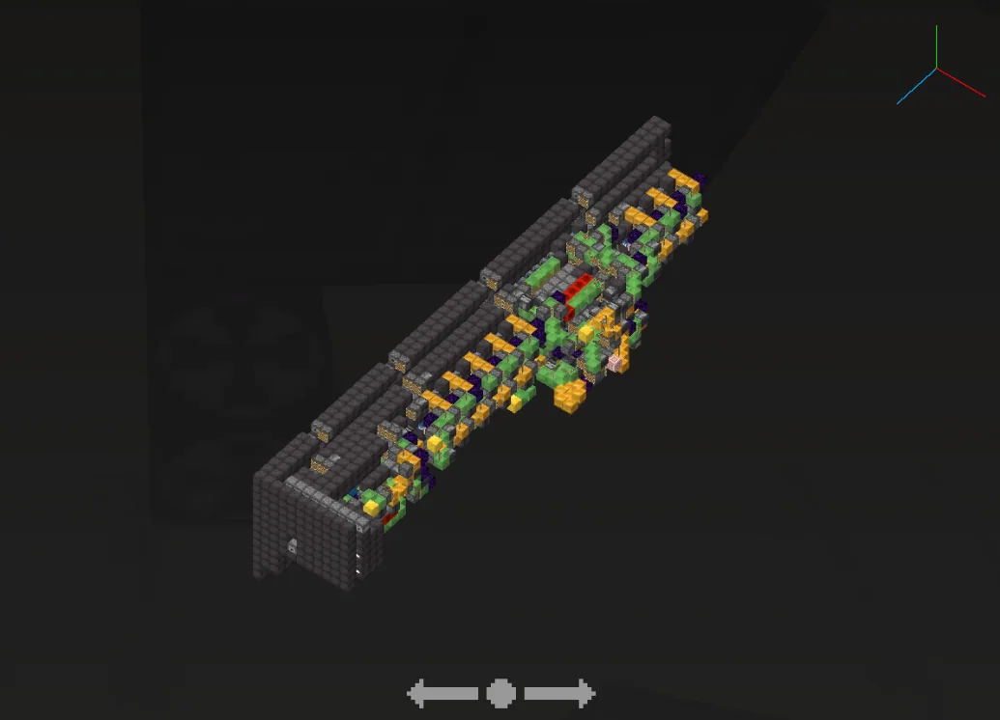
↑图2.2.1/1
可以看出，这种结构也需要大面积占用正面空间，故有了2.2.2的技术。同时载弹量不高。
这种弹匣技术的优势是完全不怕风弹干扰。
2.2.2水流预偏转式蓝头弹匣炮技术
为了防止占用正面空间，我使用了向后发射再靠一个水流装置偏转的装置让其转大约90度，注意这种技术每个发射器需要打开后又关闭，不然后面的蓝头会获得额外的速度导致其偏离原本的轨道。
↓图2.2.2/1弹匣IIG
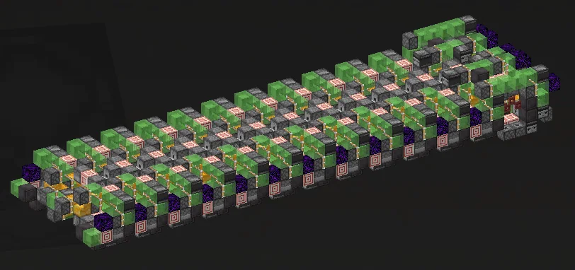
我们简单介绍了弹匣炮的分类，现在是时候讲解这种武器的制造要点了。
2.2.3蓝头弹匣武器制造要点及其优缺点
制造蓝头弹匣武器的关键在于，如何给蓝头一个稳定的初速度？我的答案是水流冲刷，但问题是水流会一股脑把周遭蓝头推走，导致爆炸，所以需要一个限制，不可以阻塞实体运动，但需要挡住水流，很明显，栅栏门是个理想原材料。但这一整个蓝头轨道上面的蓝头需要活塞推动，活塞还恰恰挡在了轨道中蓝头的发射路线。所以我们需要一套额外的装置，在移动时让活塞对其蓝头推着蓝头一起移动，战斗时让活塞移走变成栅栏门以发射。图2.2.3/1就展示了一个不错的参考架构。建造这种武器需要特别关注可堆叠性和架构的体积。
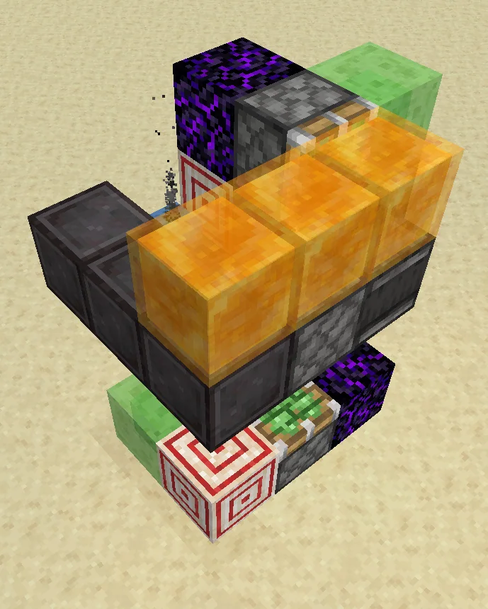
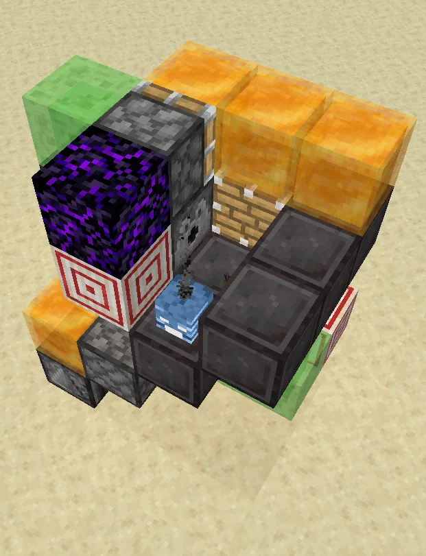
↑图2.2.3/1 ↑图2.2.3/2
2.2.4弹射式低速蓝头弹匣速射炮(本节作者：铿惑)（有删改）
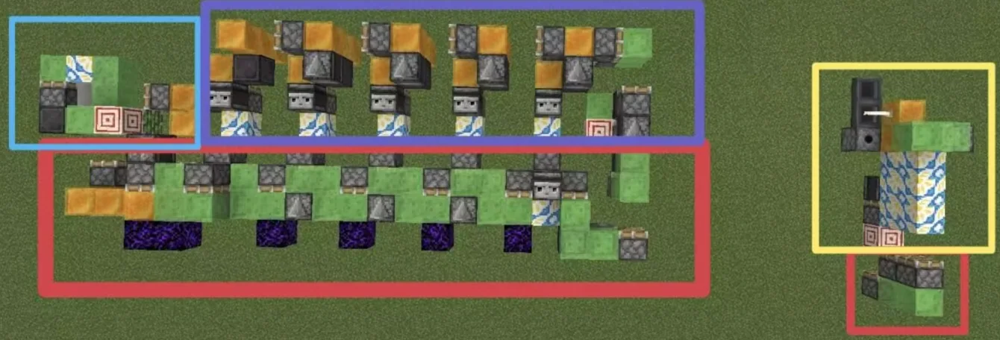
红框为移动线，浅蓝框为弹射部分紫色框为蓝头弹匣，黄色框为无线电控制部分（图一），先用无线电（黄色）远程将弹射部分（浅蓝）横向移动至敌舰正前方，然后激活蓝头弹匣（紫色）使其向左移动。弹匣上的向下充能的侦测器会在弹匣到达合适位置时激活弹射用的粘性活塞，随后粘液块就会把蓝头弹射出去。
该技术可以让一大串蓝头精准命中同一个位置，且不占用战舰前半部分宝贵的空间（铿惑认为不占前方空间是所有侧发武器最核心的优势），对于纯合金防护的战舰有极高的穿深，同时不会受到等效装甲的影响，而编者认为本架构最核心的优势就是可以超视距打击，这是所有手敲/目视蓝头武器都做不到的。但是缺点也很明显——弹射装置容易损坏，导致所有蓝头作废。
第三章
3.1风弹机枪技术
随着版本的更新，风弹这种新实体进入了航械玩家的视线，这种全新的武器颠覆的合金-蓝头对抗的平衡，并快速形成了风弹-合金-蓝头对抗的全新平衡。而且，根据我们在实战中总结的经验来看，风弹还可以强效压制水管尤其是用栅栏门拦水的水管、其它任何使用了栅栏门/外露标靶/外露实体的模块。
3.1.1风弹提取技术
在军用航械领域，3.1.1/1所示的提取架构是最为流行的。需要注意的是下面一那排方块必不可少。

←图3.1.1/1
3.1.2常规风弹机枪技术
图3-10是一款常规风弹机枪，其采用了3.1.1的提取设备，并靠水流向前推动并被箭矢偏转。

图3.1.1/2
在布局风弹机枪时建议把其隐藏进战舰内部并在正面区域设计偏转装置，因为如果外挂风弹机枪非常容易被摧毁。
3.1.3双头风弹机枪技术
我们先来看一个反例，把风弹机枪挂在战舰两侧，当敌人出现在一侧时你会发现真正有输出能力的只有一台，也就是说你战舰花费了两台机枪的空间，但可以打击敌人的一般情况下仅一台。
为了节约正面空间，同时提升风弹机枪的真实输出能力，知鱼发明了双头风弹机枪技术。

↑图3.1.3/1旗帜-506工程VB型搭载的机枪
如图3.1.3/1所示，通过把机枪横置，通过手动选择水流方向选择了风弹的发射方向，在两侧建造偏转装置，可以有效节约空间，同时可以巧妙利用比较难利用的中间区域。最关键的是，其有多少发射器就代表有多少发射器可以真正打到敌人头上，而不存在无法利用的发射器。
3.1.4下发风弹机枪技术
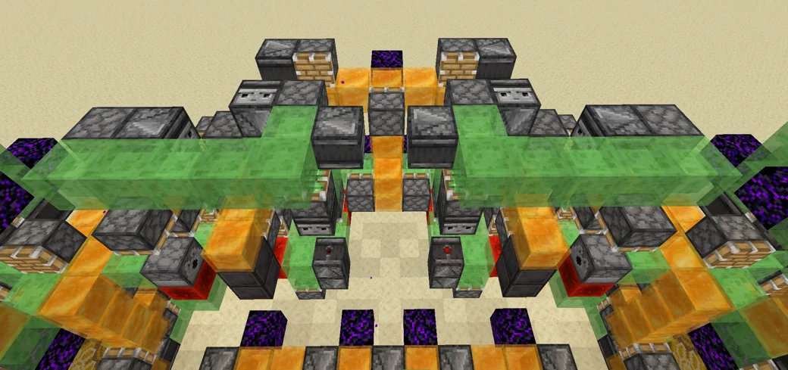
↑图3.1.4/1
常规/双头风弹机枪被禁锢在战舰上，无论如何难以威胁到下发的蓝头舰载机。（除非蓝头舰载机已经离战舰母体非常远，彻底脱离母舰的庇护）
所以知鱼把风弹机枪做成舰载机，向下发射并从下方打击舰载机群。
3.1.5下射风弹机枪技术
3.1.4介绍的下发风弹机枪也有局限性，其可以被击毁，虽然可以修复但并不完全安全。故有了3.1.5的下射风弹机枪，这种机枪把主体留在战舰上，利用岩浆块先把横向飞行的蓝头向下弯折，再被偏转，偏转装置则部署在战舰下方。这样其的生存能力会远远强于下发式风弹机枪。
↓图3.1.5/1
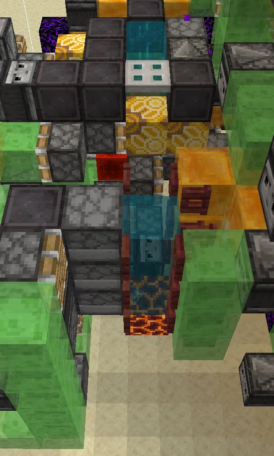
3.1.7风弹雷达技术简介
3.1.7.1水流偏转法
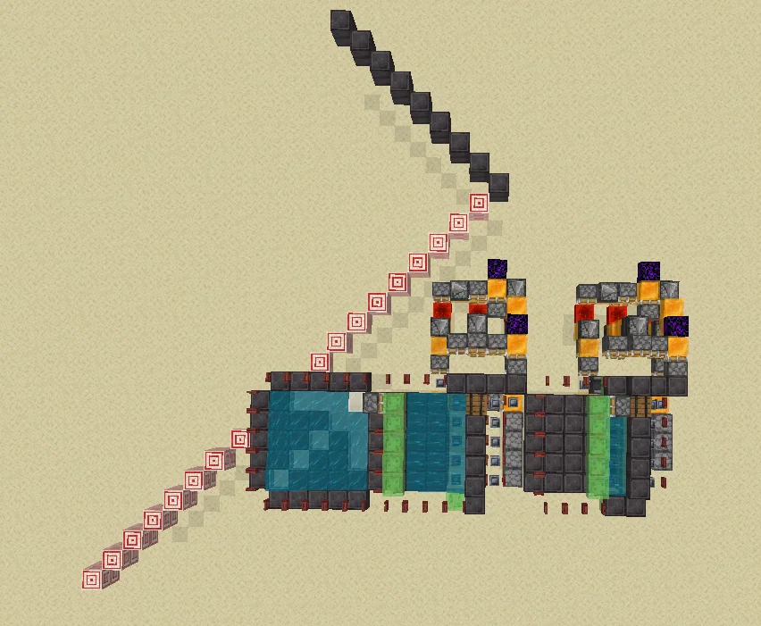
↑图3.1.7.1/1 HNMR-1C型风弹雷达
受到现实中示波器、核磁共振氢谱的原理的启发，知鱼用雨燕提供的风弹机枪改装出了一个风弹雷达，如图，在生成部分可以通过选择发生装置/激活粘性活塞来调整风弹加速区的长度，左边的加速区长度可调为4/3格，右边的可以调为3/2格，故风弹可以经过7/6/5/4/3格加速区，故在偏转装置（最左边的正方形水域）中转弯角度不同，其可以扫描大约40度空域中的5个小区间。风弹爆炸后会推动后面的风弹返回，击中标靶，返回信号。这种原理和示波管、核磁共振氢谱颇有相似之处。
可以看出这种架构的局限性是目标越远越扫描不精准，但好处是极度稳定，不怕被各种原因干扰信号接收。这个技术最大的贡献是提供了用水流偏转的思路。
3.1.7.2铿惑雷达架构（本节作者：铿惑）（有删改）
理论上，这种架构的雷达会比风弹更早出现，烈焰弹可以代替风弹，但是烈焰弹有小概率会“丢包”——即偏移一格，导致信号丢失，这个问题可以用接收端增加一个标靶解决，采用风弹只是因为它不会丢包而已，但是很可惜这架构出现几天后XINY雷达就横空出世了。铿惑架构的底层逻辑就像是在战场中牵了一根可以移动的细线，线断了就是中间撞到物体了，下面是详细原理：
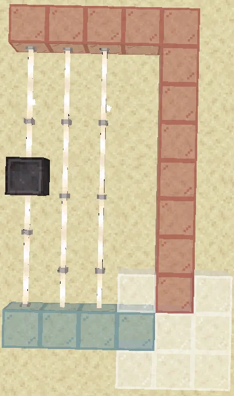
↑图3.1.7.2/1
正如图3.1.7.2/1所示，蓝色代表子模块C的轨迹，红色代表子模块B的轨迹，白色是母体A，末地烛代表风弹的轨迹，合金块代表敌舰，在运行时，B先发射出去并进行一次变向，随后和C同时向左移动，B每移动一次就会发射一个风弹，C负责接受并向A返回信号，但是如果风弹轨迹上有敌舰，风弹无法被C接收，C会不返回信号。
A中有一套比较复杂的装置，假如信号是连续的就会自动记录返回数（可以表示横坐标）但信号丢失就会终止计数并上报记录的横坐标。
可以看出，这套系统结构复杂，体积巨大，扫描效率比较低，故目前没有流行。（其实所有雷达都不怎么流行）
3.1.7.3双风弹雷达（本节作者：XINY）（有修改）
这是可以探测斜面角度而精确返回，且能直接返回角度信息、无探测范围上限且探测速率最快的雷达架构。
最初雨燕提出的雷达（双风弹）在非正东/南/西/北/上/下等方向无法精确返回，会因为方块阻挡风弹爆炸射线而导致偏差，因此测量非90倍数角度敌人时，所需的成本巨大。（要单独拿一层来测量一个角度，而且有测量距离上限）
为了解决此弊端，制作了无偏差雷达，以测量非90倍数角度的敌人。对风弹的研究中不难看出：
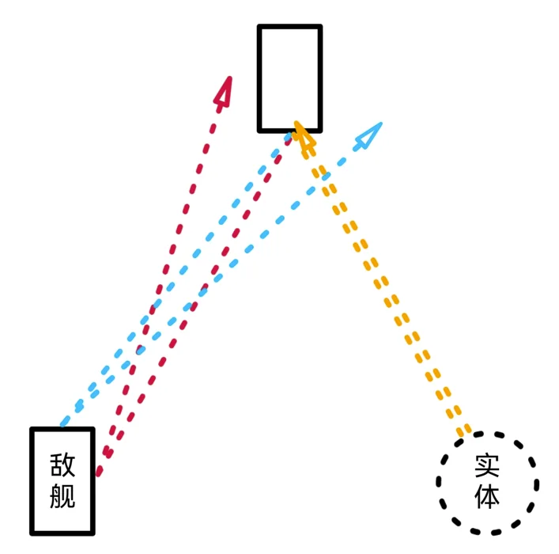
↑图3.1.7.3/1
我们观察到，只有双风弹架构才是最稳定的。只有双风弹撞击实体时，才能正常精确返回，而众所周知，在战场情况下，几乎不可能有通过撞击敌舰实体返回的情况，因为敌舰可以用电磁炮干扰风弹的扫描。
3.1.7.4 XINY雷达架构（本节作者：XINY）
为了让双风弹正常返回，必须在雷达弹头上加入实体，让双风弹撞击预设的实体。
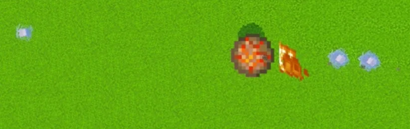
↑图3.1.7.4/1
因此有了无偏差雷达的设计：最前方的风弹（最左边）撞击敌舰，减速火球，火球被减速后撞击并引爆其后方的风弹，风弹爆炸，由于其撞击的是火球实体，不会有任何爆炸射线损失，因此可以将完整的爆炸射线作用在最后一个风弹上，使它准确返回。
由于无偏差雷达在固定角度上返回的轨迹是固定的直线，因此可以在该直线上布置标靶，来检测此探测角度是否有风弹返回，再加上水流偏转装置，可以满足360°的探测需求。
3.1.7.5偏振式雷达架构（本节作者：非提·隆美尔）（部分插图作者：知鱼）
原理：一个低速蓄力风弹团发射机把32堆叠的风弹团推向偏振器，风弹团在偏振器上发生一次剧烈爆炸。一部分风弹向预设方向偏移同时被爆炸加速（这个过程是为了让风弹脉冲加速，并产生类似xiny雷达的前后排列结构以便反弹），一部分向反方向偏移弹风弹被偏滤板拦截消除干扰，向预设方向飞行的风弹团在撞击到物体后会被延入射角法线崩回来（速度极快，实测50多格崩回来几乎没有延迟），打在标靶传感器阵列上。距离越远，传感器的读数就越靠右边从而实现一键测距。改变雷达视场就直接移动战舰即可，这是侧视雷达。但受限于主流战舰航速过低，这种雷达更适合高航速的特殊战舰。
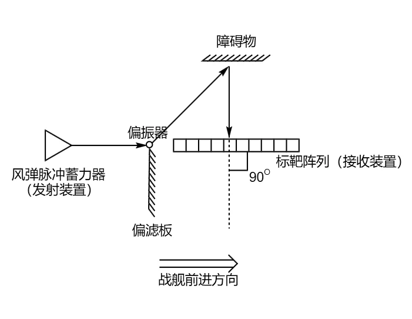
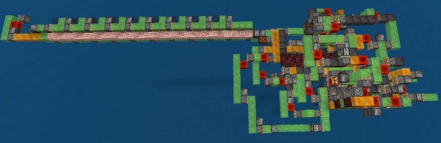
↑偏振式风弹雷达的样机
3.2恶魂机枪技术
3.2.1弹射式恶魂火球机枪
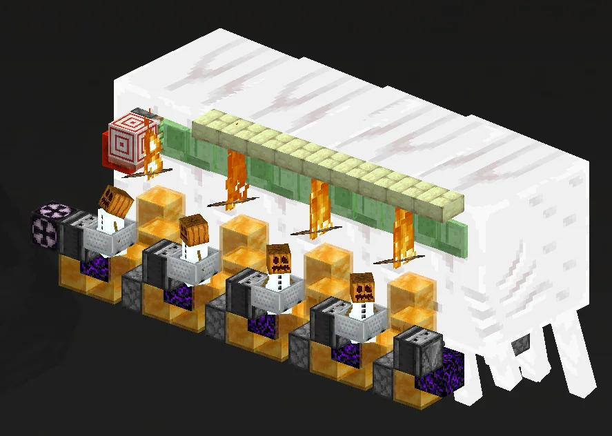
↑图3.2.1/1
这种恶魂火球机枪采用了雪傀儡吸引恶魂仇恨的机制来诱导恶魂发射火球。这个架构的巧妙之处在于，不打开活版门时控制弹射用的粘液块的粘性活塞不会被激活，而当打开后，标靶被激活，活塞工作，恶魂火球被向前弹射并被偏转装置偏转。
第四章
面对水甲、含水甲、多层合金装甲，常规蓝头、火球武器越发显得力不从心，于是高速实体武器应运而生。但一开始的高速蓝头武器依赖实体TNT加速，结构极度复杂，并不具有实用化的潜力。
高速武器真正的转折点在于风弹更新，风弹可以堆积，引爆后会提供推力推动实体，这是一种非常理想的提供推力的实体，其大幅度简化了推进部分。
4.1高速现象
当实体移动速度达到一定速度后，其会具有穿透方块的能力，可以实现“隔山打牛”的效果，故这种特性可以被利用来击穿水甲等装甲。其具体原理参见5.7（速度越高，穿透效果越明显，穿过的格数会越多）
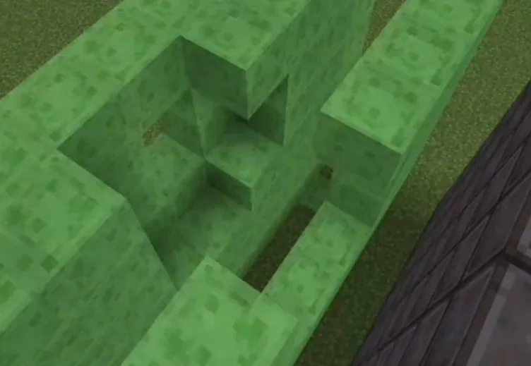
←图3.3.1/1
4.2 一次性高速蓝头架构
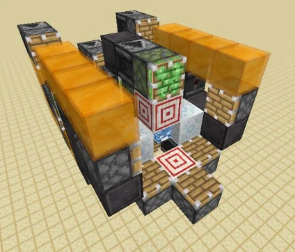
←图3.3.2/1
在研究高速现象武器化的过程中，一种原始的高速蓝头架构被提出，图3.3.2/1所示装置有2个风弹提取装置，在爆炸后可像矢量炮一样给蓝头提供推力。
这种装置的缺点很明显，一个蓝头就霸占了如此巨大的体积，而造成的毁伤却微乎其微，故不实用。其优势在于比3.3.3的架构更加精确，适合配合严谨的计算精准击破敌舰的关键模块。
4.3 566高速蓝头架构
566把风弹提取装置安排在一排弹匣尾部，平常弹匣中蓝头比风弹生成位置矮一格，启用这颗蓝头时才被活塞推上去；风弹提取装置后有一个弹射装置，把提取好的风弹弹射向前后和被抬升的蓝头碰撞；两组风弹推力不一致实现了矢量化效果。

虽然这是第一个真正把高速蓝头实用化的技术，但该架构的缺点也很明显——不精确，同时编写火控程序难度比较大，需要一个同时会编程和了解实体性质的人出马。
4.4侧发一次性高速蓝头架构（本节作者：铿惑）（有删改）
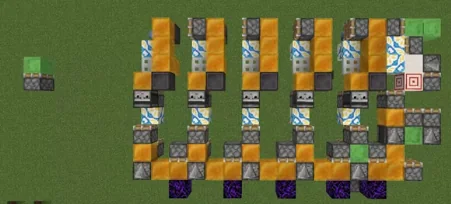
↑图3.3.4/1
侧发高速蓝头弹匣速射炮，是侧发弹射式低速蓝头弹匣速射炮的改进版，结构上二者颇为相似。
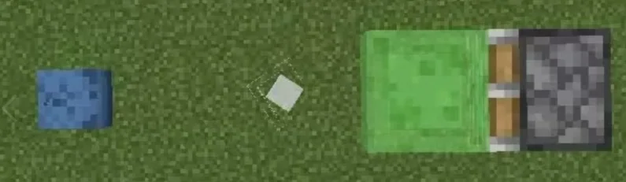
↑图3.3.4/2
原理如图3.3.4/2，整个装置会先被侧向推到打击位置，粘液块弹射堆叠的风弹撞到蓝头上，风弹爆炸，加速蓝头。
风弹堆叠的数量可随意调节，以此造成不同的穿深，配合全自动化带来的高射速，是一种相当实用的高速蓝头架构。
4.5目视高速蓝头架构
箭矢偏转会导致原有的速度消失，加速装置则不能目视偏转，但如果在目视偏转后一瞬间被加速，可以做到既有高速效果还能目视偏转。
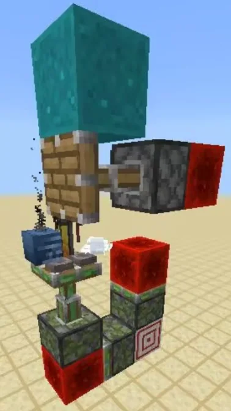
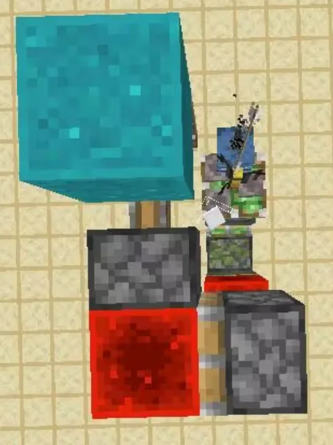
↑图3.3.5/1
其原理是：箭靶激活时粘液活塞和普通活塞伸缩，炼药台下降箭矢与沙子掉落，由于特性蓝头会向玩家视角方向飞行，沙子引爆风弹让蓝头加速，从而实现目视高速蓝头。
第五章
5.1堆堆乐现象
随着近期大批新人集中入坑，航械圈被注入了一批新的血脉。但是这批新人的战舰的发展逐渐超出了传统的理念。
这批新人是幸运的，他们入坑时没有车行和SCO的骂战，也有大批现成的教材、模块、一群足够耐心的大佬帮助，但他们也是不幸的，他们入坑起就被甲弹对抗的大环境带入歧途，盲目性地沉迷对战而不是提升自己的技术力。不过，靠堆堆乐带来的战斗时的优势的确足够明显，投入的成本也足够低廉，所以他们在心态上更趋向于短期有更高回报的堆堆乐。
5.2典型的战舰布局赏析
在航械漫长的发展历史中，逐渐催生出了一批批模块布局相似的战舰，这些布局往往在当时的战斗环境中具有无与伦比的优势，本章总结了部分比较经典或是有独特优势的战舰布局范例。
5.2.1英仙座布局
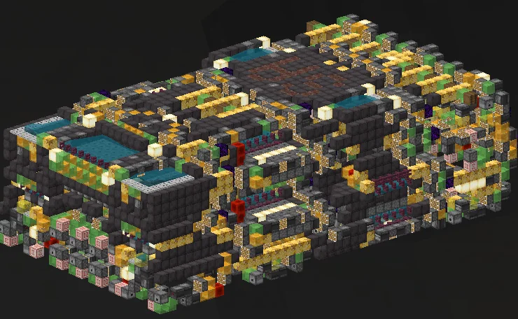
↑图4.2.1/1
英仙座MAX完全有资格代表老一代战舰的巅峰水平，其是技术力、实战能力、颜值的完美平衡的典型例子之一。
其正面为1门水管，正面左、右下角搭配电磁炮，水管下方配导弹，水管两侧配了防空小水管；还有后方的舰载机群可以使其具有更强的立体作战能力。中间放置垂发舰载机却是一大败笔。综合来看，英仙座布局有非常全面的武器系统。
英仙座还是第一款5代舰，搭载了中控装置。
这种布局相当经典，晚入坑的玩家或许无法体会到这种布局有多流行，以前的英仙座布局简直就像是现在的叶卡布局一样火爆。比如旗帜8-1系列、苍海鹰都在很大程度上借鉴了该布局。
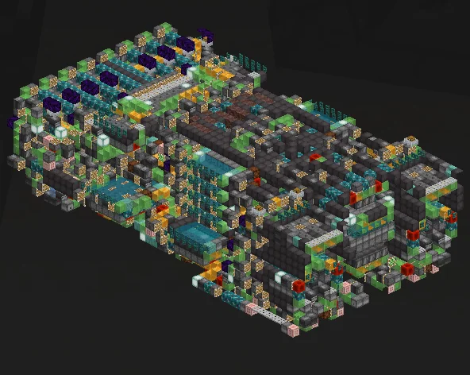
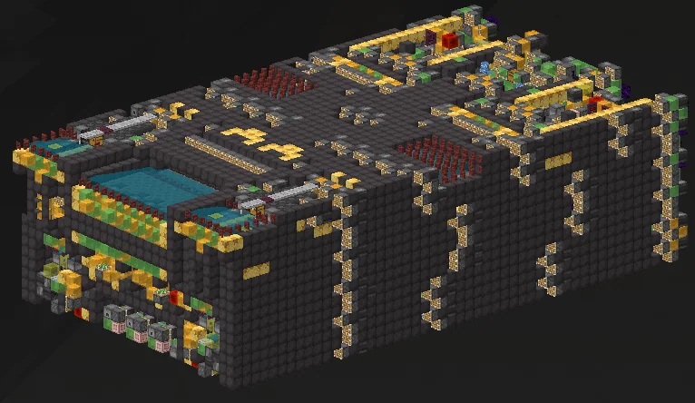
↑图4.2.1/2
5.2.2.1叶卡布局（本节作者：雨燕MRedstoneM）（有修改）
叶卡布局指叶卡捷琳娜-24-1以及后期各种魔改型号的布局，第一艘六代舰——叶卡捷琳娜-25-1也是叶卡布局，这是一款生存能力和火力都相当强悍的布局。
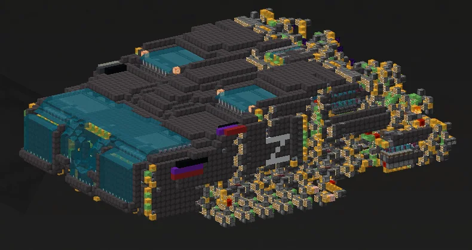
↑图4.2.2.1/1
整舰由4门大口径水管作为主炮，前端2门主炮之间是一门用于防御蓝头/导弹的重甲高频电磁，后部的2门主炮可以在前面2门主炮摧毁后补位。其舰体正中心的全合金包裹式舰桥不仅提供了巨大的舰桥空间，同时能够有效阻挡炸膛导致的伤害。
叶卡特有的阶梯式布局给其带来了强大的火力优势，也提供了相当多的挂点，用于装载导弹轰炸机或其他组件，易于改装，这使得叶卡不仅具有近距离和远程火力，还成为了当前二维以上导弹/轰炸机携带量最多的主力战舰。
但由于4主炮夹1副炮的布局，导致其宽度变得过大导致受击面积过大，且舰桥上方的空间不好利用。
这是创作于23年末成熟的布局，在24年末后受到了不少萌新的青睐。
5.2.2.2 伪叶卡布局
伪叶卡布局是叶卡布局的衍生物，这是指具有形如叶卡布局一样的把4门及以上的水管以梯形布置的布局。
伪叶卡布局和叶卡布局最明显的区别是正中央一般不搭载重甲电磁炮，甚至索性没有设计这一块正面空间，这一改动其实并不算太过糟糕，但最糟糕的问题是，使用这种布局的设计者在内部空间的安排上非常糟糕，战舰内部往往仅搭载了巨量但单一的蓝头舰载机，但在目前装甲——蓝头——风弹的对抗环境下，失去风弹这一环无疑是致命的，这导致不论是安装1000发还是10000发蓝头，真正能落在敌人战舰上的是0发。
当然，这种布局也不一定是一无是处，我认为最大的亮点是把侧炮外翻，作为吊舱和一些其它模块一起挂在战舰侧面，这解决了叶卡侧面装甲薄弱的缺点。（叶卡侧面仅2层合金，但是这种布局完善时并没有蓝头这种武器，所以设计时从来没有考虑过这种问题）
分析其流行的原因，我想原因很明显，在技术力相同的前提下，数量越多胜利的机会越大，甚至于当数量累计到一定程度，可以抹平技术上的沟壑。但这只是饮鸩止渴，过度沉迷堆而忽略技术发展只会影响玩家本人的长期发展。
5.2.3 旗帜布局
旗帜布局事实上可以分出多种不同的布局，旗帜506H2和型旗帜506VB型采用的布局方案算是比较有代表性的。
5.2.3.1旗帜506II期布局
旗帜506H2型在建造时深受英仙座系列的影响，在正面武器配置上和其非常像。其最大优势在于把尾部的舰载机改成了4门大口径下坠式矢量炮，这是唯一拥有此恐怖配置的战舰，JAT的伪水管式大口径矢量炮也难以如此大量地安装在一艘如此体型的战舰上。其远距离输出能力惊人，而且因为矢量炮组位置刁钻，在对狙中难以摧毁。
506H2还融合了大水管、重装甲、蓝头舰载机，这些甲弹对抗必备的关键要素。某种意义上说是目前甲弹对抗思想的起源。
↑图4.2.3.1/1
5.2.3.2 旗帜506V期布局
经过了几十艘实验品的铺路，知鱼再次探索出了一个强大而精密的布局设计。
↑图4.2.3.2/1
其延续了506H2的后置大口径矢量炮，保留下了其的后置大口径矢量炮布局，同时整合了侧面重甲电磁炮；察刷、矢量、中频11宽水管；防爆顶盖；双头风弹机枪；下射风弹机枪；抗风弹格栅；恶魂火球机枪等先进技术。
↑图4.3.3.2/2
如图，电磁炮和水管主炮的连接缝隙被设计为了恶魂火球机枪的通道口。主炮后方嵌合了双头风弹机枪。这个布局在非常有限的体积下紧密安装了很多甲弹对抗中非常重要的模块，侧面还有隐藏在战舰内部的水甲作为保护。
5.3模块压制关系示意图
不同的模块之间存在类似斗兽棋中的压制关系，理解并掌握不同模块之间的压制关系是新时代航械玩家的必修课。（注：水管受风弹压制效果和频率有关，中频内膛更容易被干扰，其次，分膛水管对蓝头也有相当显著的压制效果，这是因为其的空爆TNT足够多）
5.4战舰分代
目前航械战舰的分代主要认可以下划分标准，大部分内容由雨燕制定；知鱼提出了把实战能力和技术力分为两个维度以衡量战舰水平的思路。但目前对六代战舰的定义存在一定程度的分歧。
实战等级：
一代：有易水器
二代：有一定防空能力，能拦截普通导弹或轰炸机一
三代：有较强的对舰能力，能打击轻装甲目标
四代：有高效率的对舰火力和密度，能够承受住一定的打击
五代：有高强度的损害管制，能在殉爆后造成极小的损伤·
六代：应当拥有全面（最起码是装甲、火力、甲弹对抗技术上的） 压制传统五代战舰（非当前二维分代法的所谓五代战舰）的能力，核心指标在于拥有新型的甲弹对抗武器
技术等级：
1级：推拉驱结合
2级：有计步引擎
3级：压缩优秀，大多数模块间距不超过24
4级：三种及以上的攻击和防御手段和低强度集控（无法单独控制某个模块)5级：高强度集控（所有模块均可单独控制）或中控引擎以操纵全部模块一6级：具备一定数字运算能力和指令存储能力
（注：战舰分代标准随技术进步而进步，新的属于更高水平战舰的标准仍待研究；没有特别强调是实战几代还是是技术几代时，我们一般默认其说的是前者）
需要指明的是，这仅是一个简单而粗糙的衡量战舰的标准，代表不了任何实际水平的优劣，例如，根据传统的定义规则（本书未涉及），旗帜-506工程X4型拆了舰桥只能是四代战舰，但很明显其可以碾压很多五代战舰。对于任何想通过举一些类似个例彻底否定我们目前暂行标准的朋友，笔者的答复是：“说的好我完全同意（广安口音）”。
5.5对若干针对风弹机枪的命名方面的争议的决议（927协议）
1.当前有必要要对各种功能的风弹机枪进行细化划分。
2.不能打出连贯风弹链，而是打出一个一个的大风弹(一个风弹的碰撞箱内堆了很多风弹)的武器，应该是叫风榴弹机枪。
3.有必要给在战舰上方发生偏转再自上而下打击敌人的机枪加入“上射”这种定语，同理如下射机枪，而正常在战舰上发生偏转的机枪不加该定语。
4.共轭机枪需要有两个及以上的风弹生成装置(初始飞行方向并不一致)依赖箭控等方式统一速度、汇入共同轨道的能力而非单纯的统一速度。
5.假如如共轭机枪、双头机枪这种有多组提取端的装置，发射器数目是算总数目。
（注：风弹机枪不包括风人机枪，二者是互相独立的概念）
5.6风弹机枪的系统命名法
5.7相关前置知识简介（引用自：《凋零蓝头炮技术导论》（舟舟））（有修改）
本节旨在向部分读者介绍一些理解正文有关内容所必备的知识。
MC 中的基本长度单位是格,下称“b” ，最小时间 单位是游戏刻,下称“gt” ，此外有辅助时间单位红石刻,下称“t” ,红石中继器每调长一档，信号延 时就增加一红石刻，红石刻与游戏刻的换算是 1红石刻=2游戏 刻；在正常条件下，每秒钟游戏应当运行二十游戏刻；倘若运算量过大以至于硬件设备不足以承担每秒钟二十游戏刻的运算负担。比如当你/fill了215个TNT想整个大活儿 ，游戏便会卡顿、 掉帧。在这种情况下，一游戏刻要花多少秒是不确定的。 之所以说游戏刻是最小时间单位,是因为 MC 中的时间和运动均是离散的。例如TNT加速的蓝色凋零之首在任何一游戏刻内都静止不动，而在上一游戏刻与下一游戏刻衔接时才瞬移到下一个位置。我们固然可以将一游戏刻再划分为多份， 但在这段比一游戏刻更短暂的时间内游戏世界中完全未表现出任何变化。由此可见，在MC中比一游戏刻更短暂的时间长度不存在物理意义，这也正是高速蓝头的穿甲特性的本质原因。
蓝色凋零之首在被生物或由生物发射的弹射物例如箭矢攻击时，其速度方向将转向该生物的目视方向，同时速率大小将重置为 1block/gt；通过这种特性操控蓝头等弹射物运动状态的方法称为箭控。除蓝头外，这种方法也能控制恶魂和末影龙发射的火球、发射器发射的风弹和疾风人发射的风弹；在弹射物的选取上，除了箭矢之外，玩家的手动攻击或用打火石亲手点燃的TNT、雪傀儡投掷的雪球、溺尸投掷的三叉戟、烈焰人发射的火焰弹、骷髅发射的弓箭等均可以用于箭控蓝头。若弹射物的发射者死亡，则对应的弹射物将失去箭控特性。此外，女巫投掷的喷溅型药水、部分发射器产生的弹射物无箭控特性。这是制造所有目视偏转武器、共轭机枪的共轭装置的理论基础。（这种特性在SCO也被称为目视偏转）
后记